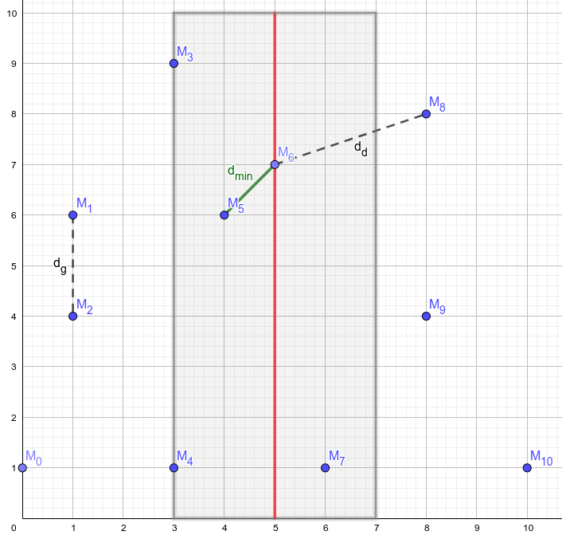
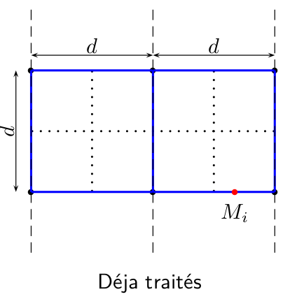
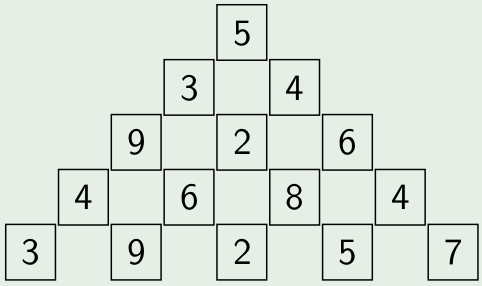

C15 Décomposition en sous problèmes ¶
"Those who cannot remember the past are condemned to repeat it."
(in The Life of Reason, 1905)
Cours¶
Attention
Ce diaporama ne vous donne que quelques points de repères lors de vos révisions. Il devrait être complété par la relecture attentive de vos propres notes de cours et par une révision approfondie des exercices.
Travaux dirigés¶
Travaux pratiques¶
 Exercice 1 : Exemple standard de DPR : le tri fusion¶
Exercice 1 : Exemple standard de DPR : le tri fusion¶
L'algorithme du tri fusion consiste à :
- (diviser) partager le tableau à trier en deux moitiés (à une unité près),
- (régner) trier chacune des deux moitiés,
- (combiner) les fusionner pour obtenir la liste triée.
On a schématisé le tri du tableau [| 10; 6; 3; 9; 7; 5 |] suivant ce principe ci-dessous :
graph TD
subgraph Partager en deux
S["{10,6,3,9,7,5}"] --> S1["{10,6,3}"]
S --> S2["{9,7,5}"]
end
subgraph Fusionner
S1 -.Trier.-> T1["{3,6,10}"]
S2 -.Trier.-> T2["{5,7,9}"]
T1 --> T["{3,5,6,7,9,10}"]
T2 --> T
end-
Ecrire en OCaml une fonction
separe int list -> int list * int listqui sépare une liste en deux listes de même longueur (à une unité près). -
Ecrire en OCaml une fonction
fusion int list -> int list -> int listqui effectue la fusion de deux listes triées. -
Donner une implémentation du tri fusion en OCaml.
Exercice 2 : Le tri rapide¶
Le tri rapide (quicksort) est un algorithme de tri développé par T. Hoare en 1959. Le tri rapide repose comme le tri fusion sur une méthode diviser pour régner. La séparation en deux sous tableaux s'effectue en choisissant (aléatoirement) un pivot, la séparation s'effectue alors en mettant d'un côté les nombres inférieurs au pivot et de l'autre les nombres supérieurs. Par conséquent, la longueur des sous listes obtenue dépend du pivot choisi. Par contre on s'affranchit de la phase de fusion puisqu'elle consiste simplement à concaténer les deux sous listes. Bien qu'ayant une complexité quadratique dans le pire des cas, l'algorithme a d'excellentes performances dans le cas moyen (la fonction quicksort existe déjà en C).
Par exemple, sur le tableau \([10, 6, 3, 9, 7, 5]\) si on choisit comme pivot 5, alors la séparation en deux sous listes donnera d'un côté \([3, 5]\) (les valeurs inférieures ou égales au pivot) et de l'autre \([10, 6, 9, 7]\) (les valeurs supérieurs).
On propose ici d'implémenter cet algorithme en langage C en choisissant comme pivot le dernier élément du tableau. On effectue la séparation en place en renvoyant l'indice du pivot. c'est-à-dire qu'on veut écrire une fonction de signature int partitionne(int tab[], int debut, int fin) qui partitionne les valeurs du tableaux comprises entre les indices debut (inclus) et fin (exclu) en choisissant comme pivot tab[fin-1] et qui renvoie l'indice \(e\) auquel se trouvera le pivot après ce partitionnement.
On pourra procéder de la façon suivante :
- La partie située après l'indice \(i\) n'est pas encore triée
- Le dernier élément est le pivot
- La partie située avant l'indice \(e\) contient les éléments plus petits que le pivot
- La partie située entre les indice \(e\) et \(i\) contient les éléments plus grand que le pivot
Donc on initialise \(e\) à \(0\), on parcourt le tableau avec l'indice \(i\), si \(t_i\) est plus grand que le pivot il n'y a rien à faire, sinon il faut l'échanger avec \(t_e\) et incrémenter \(e\). A la fin, on renvoie \(e\).
- Ecrire en C la fonction
int partitionne(int tab[], int debut, int fin) - Ecrire en C la fonction
void mqsort(int tab[], int start, int end)qui trie avec l'algorithme du tri rapide la portion de tableau comprise entre les indicesstartetend.
Exercice 3 : Nombre d'inversion¶
Dans une liste d'entiers de \(n\) entiers \(t = [t_0,\dots t_n]\), on dit que le couple d'indice \((i,j)\) (\(0 \leq i <n, 0 \leq j <n\)) est une inversion lorsque \(i<j\) et \(t_i>t_j\) c'est-à-dire que les éléments sont dans l'ordre inverse de leurs indices. Par exemple, dans la liste [1; 5; 3; 7] le couple d'indices (1,2) est une inversion car 5>3. Par contre, le couple (1,3) n'est pas une d'inversion car 5<7.
-
Ecrire en OCaml, une fonction
nb_inversion int list -> intqui renvoie le nombre d'inversions de la liste donnée en argument en examinant chaque couple d'indice(i,j). Quelle est la complexité de cette fonction ?Aide
- On peut préférer une solution itérative, dans ce cas on pourra convertir la liste en tableau en utilisant
Array.of_listde façon à pouvoir accéder directement aux éléments par leur indice. - Une solution récursive sans conversion en tableau est aussi envisageable, dans ce cas on pourra soit écrire une fonction auxiliaire permettant de compter les éléments supérieurs à une valeur donnée dans une liste ou utiliser
List.filter
- On peut préférer une solution itérative, dans ce cas on pourra convertir la liste en tableau en utilisant
-
Montrer que si
l1etl2sont deux listes triées dans l'ordre croissant, alors on peut déterminer en temps linéaire le nombre d'inversion del1 @ l2Aide
Dans le cas où
l1 = h1::t1etl2 = h2::t2, distinguer les cash1 <= h2eth1 > h2. -
On note
inv(l)le nombre d'inversion d'une listel. Montrer que sil1est la moitié gauche deletl2la moitié droite alorsinv(l) = inv(l1) + inv(l2) + inv(l1' @ l2')oùl1'(resp.l2') est la version triée del1(resp.l2). -
Ecrire une fonction comptant le nombre d'inversions d'une liste en utilisant une méthode diviser pour régner. On pourra utiliser
List.sort compare lqui renvoie la liste d'entiersltriée dans l'ordre croissant en \(O(n\log n)\). -
Déterminer la complexité de la méthode diviser pour régner
Exercice 4 : Recherche des deux points les plus proches¶
On considère un ensemble de \(n\) points du plan et on souhaite déterminer la distance minimale \(d_{\min}\) entre deux de ces points.
-
Résolution "naïve" (langage de votre choix)
- Définir un type structuré
pointayant deux coordonnées flottantesxety. - Ecrire une fonction
distancequi prend en argument deux points et renvoie la distance euclidienne entre ces deux points. - Ecrire une fonction
dminde complexité quadratique qui résout le problème.
- Définir un type structuré
-
Résolution avec la méthode diviser pour régner
-
On commence par trier par abscisse croissante l'ensemble des points, on note \(M_x\) le tableau obtenu. On coupe ce tableau en deux moitiés. Puisque le tableau est trié, la moitié gauche (resp. droite) contient les points d'abscisses inférieures (resp. supérieures) à \(x_{\frac{n}{2}}\). On recherche la distance minimale entre deux points de la moitié gauche (notée \(d_g\)) et deux points de la moitié droite (notée \(d_d\)) et on pose \(d = \min\{d_g, d_d\}\). Justifier que si \(d_{min} < d\) alors deux points réalisant la distance minimale sont forcément de part et d'autre de la bande de largeur \(d\) autour de la droite d'équation \(x = x_{\frac{n}{2}}\) (voir illustration ci-dessous).

-
On suppose maintenant qu'on dispose des points de cette bande triés par ordonnées croissantes. Justifier qu'on peut se contenter de calculer la distance minimale entre chaque point de cette liste et les 7 points suivants. On pourra raisonner sur le schéma suivant :

-
Montrer que cette méthode conduit à l'équation de complexité \(T(n) = 2T(\frac{n}{2}) + K n \log(n)\). Et en déduire que \(T(n) \in O(n \log^2(n))\)
-
En utilisant les questions précédentes, écrire une implémentation dans le langage de votre choix de la méthode diviser pour régner afin de déterminer la distance minimale entre deux points.
Aide
Pour les tris, on pourra utiliser les fonctions déjà disponibles dans le langage utilisé :
- En C, c'est la fonction
qsort(attention, l'utilisation est prend en paramètre une fonction de comparaison qui sert de clé de tri) - En OCaml, c'est la fonction
sort(disponibles sur les listes et les tableaux).
- En C, c'est la fonction
-
Exercice 5 : La montée des marches¶
Pour gravir un escalier on peut faire des enjambées d'une ou deux marches. Par exemple pour monter un escalier de 4 marches, on pourrait faire 1+2+1 ou encore 2+2. On s'intéresse au nombre de façons de monter un escalier de \(n\) marches qu'on note \(f_n\).
-
Donner \(f_0\) et \(f_1\).
-
Etablir une relation de récurrence liant \(f_{n}\), \(f_{n-1}\) et \(f_{n-2}\) pour \(n \geq 2\).
Aide
on pourra différencier les cas où la dernière enjambée fait une ou deux marches.
-
En déduire une fonction
Ocamlde complexité linéaire permettant de répondre au problème -
On s'intéresse maintenant à la construction effective de toutes les possibilités et on notera \(p_n\) la liste des façons possibles de gravir un escalier de \(n\) marches. Les possibilités sont données sous forme de chaîne de caractères composées de 1 et de 2. Par exemple, \(p_5\)=
["11111"; "1112"; "1121"; "1211"; "122"; "2111"; "212"; "221"]- Donner \(p_1\) et \(p_2\).
- Etablir une relation de récurrence liant les éléments de \(p_{n}\) à ceux de \(p_{n-1}\) et \(p_{n-2}\)
- Ecrire une fonction OCaml permettant de répondre au problème.
Exercice 6 : Jamais deux consécutifs !¶
Vous disposez d'un tableau de valeurs de \(n\) valeurs \([h_0,\dots,h_{n-1}]\), on doit sommer les valeurs présentes dans ce tableau mais sans jamais utiliser deux éléments consécutifs. Le but de l'exercice est d'écrire un programme permettant de trouver la somme maximale ainsi atteignable.
Par exemple si le tableau contient les valeurs \([7, 5, 3, 6]\) alors la somme maximale est atteinte en prenant \(7\) et \(6\) et vaut \(13\).
-
Résoudre ce problème en utilisant la programmation dynamique
Aide
On pourra noter \(S_i\) la somme maximale sans utiliser d'éléments consécutifs à partir de l'indice \(i\) et déterminer la relation de recurrence liant les \(S_i\) (\(0 \leq i < n\))
-
Proposer une solution pour reconstruire la liste des valeurs utilisées dans la solution
Exercice 7 : Découpe de valeur maximale¶
Le problème de la recherche de la découpe de valeur maximale d'une barre a été résolu en cours. On rappelle ci-dessous la fonction C itérative qui répond au problème :
Découpe de valeur maximale en C
-
Faire fonctionner ce programme avec les données suivantes et donner la valeur de la découpe maximale.
Longueur 1 2 3 4 5 6 7 8 9 10 11 12 13 14 15 16 Prix 3 6 8 12 13 16 19 24 28 29 32 33 37 40 42 43 -
Utiliser le tableau
vmaxdes valeurs maximales des découpes déjà construit afin de déterminer une découpe maximale.Aide
On pourra remarquer que puisque
vmax[16] = vmax[7] + prix[9]cela signifie qu'une découpe maximale peut-être obtenue avec un morceau de taille 9 et la découpe maximale d'une barre de taille 7. En répétant ce processus de proche en proche on peut déterminer la taille des morceaux d'une découpe de valeur maximale.
Exercice 8 : Tranche de somme maximale dans un tableau¶
Etant donné un tableau d'entiers (positif ou négatif) \([e_0,\dots,e_{n-1}]\) on cherche dans ce tableau la tranche de plus grande somme. Par exemple pour le tableau \([-2, 7, 1, -3, 5, -8, -2, 9]\) c'est la tranche \([7, 1, -3, 5]\) qui a la plus grande somme et cette somme est 10. On n'autorise pas de tranche de longueur nulle et donc par exemple pour le tableau \([-5, -2, -7]\) c'est la tranche \([-2]\) qui a la plus grande somme.
-
Implémenter l'algorithme naïf qui calcule la somme de toutes les tranches possibles c'est-à-dire les \(\displaystyle{S_{ij} = \sum_{k=i}^{j} e_k}\) et donne ensuite le maximum. Quel est la complexité de cet algorithme ?
Aide
On pourra d'abord écrire la fonction
somme_tranchequi prend en argument deux entiers \(i\) et \(j\) et renvoie \(S_{ij}\) -
Proposer une version permettant de se ramener à un algorithme ayant une complexité quadratique.
Aide
On pourra par exemple calculer les \(S_{0i}\) pour \(0 \leq i \leq n-1\) et exprimer les \(S_{ij}\) à l'aide de ces sommes partielles.
-
Un algorithme très élégant et ayant une complexité en \(\mathcal{O}(n)\) pour ce problème a été proposé par Jay Kadane. L'algorithme consiste à parcourir le tableau en tenant à jour la valeur de \(T_j\) qui est la tranche de somme maximale qui se termine à l'index \(j\). La somme de la tranche maximale est alors obtenu en maintenant à jour une variable contenant le maximum des \(T_j\) au fur et à mesure de leurs calculs.
- Etablir la relation de récurrence liant \(T_{j+1}\) et \(T_{j}\)
- Implémenter et tester ce nouvel algorithme
- Proposer une version qui donne aussi les index de début et de fin de la tranche de somme maximale.
Exercice 9 : Parenthésage optimal d'un produit matriciel¶
Etant donnée \(n\) matrices \(A_0,\dots,A_{n-1}\), on note \((l_i,c_i)\) les dimensions de \(A_i\) (\(0 \leqslant i < n\)) et \(m(i,j)\) le nombre minimal de multiplication pour effectuer le produit \(A_i \times \dots \times A_j\) avec (\(0\leqslant i \leqslant j < n\)), les relations suivantes ont été établies en TD:
\(\left\{ \begin{array}{lll} m(i,j) &=& 0 \text{ si } i=j \\ m(i,j) &=&\min \left\{ m(i,k) + m(k,j) +l_{i}c_{k}c_{j}, i \leqslant k < j\right\} \\ \end{array} \right.\)
En effet, si le produit ne contient qu'un terme alors aucune multiplication n'est nécessaire. Sinon pour tout \(i\leqslant k <j\), on sépare le produit \(A_i\times \dots \times A_j\) en deux sous produits \(A_i\times \dots \times A_k\) et \(A_{k+1}\times \dots \times A_j\) , on calcule le nombre minimal de multiplications pour ces deux sous produits et on ajoute le nombre de multiplication de la multiplication finale. Et on prend le minimum des valeurs obtenues.
On suppose que les dimensions des \(n\) matrices sont données sous la forme d'un tableau de couple d'entiers en OCaml (type int *int Array)
-
Ecrire une fonction
int*int Array -> int -> int -> int -> intqui prend en argument un tableau de dimensions ainsi que 3 indicesi,jetket renvoie le nombre de multiplications effectués lors du produit entre les matrices \(A_i\times \dots \times A_k\) et \(A_{k+1}\times \dots \times A_j\) -
Ecrire une fonction
get_min int list -> intqui renvoie le minimum des éléments d'une liste, on pourra traiter le cas de la liste vide avec unfailwith -
Ecrire une fonction
opti int*int Arrayqui prend en argument le tableau de dimensions des matrices et renvoie le nombre minimal de multiplications à effectuer.Aide
On pourra utiliser
List.initpour générer la liste du nombre de multiplications pour chaque valeur de \(k\) puis récupérer le minimum à l'aide de la fonctionget_min -
Tester votre fonction sur le tableau
[|(2, 4); (4, 6); (6, 5); (5, 4); (4, 2); (2, 8)|]et vérifier que le résultat est \(196\). -
On considère maintenant le tableau suivant représentant les dimensions de 25 matrices :
Obtient-on la réponse en un temps raisonnable avec la fonction de la question 3 ? Pourquoi ? Mettre en oeuvre la stratégie de mémoïsation afin de palier le problème puis tester votre réponse[|(15, 8); (8, 13); (13, 11); (11, 6); (6, 2); (2, 17); (17, 17); (17, 12); (12, 3); (3, 10); (10, 7); (7, 10); (10, 11); (11, 8); (8, 7); (7, 8); (8, 9); (9, 8); (8, 12); (12, 10); (10, 3); (3, 4); (4, 19); (19, 12); (12, 1)|]
Exercice 10 : Plus longue sous chaîne palindrome¶
Etant donné une chaîne de caractères str, on chercher à déterminer une des plus longue sous chaîne de str qui soit un palindrome. Par exemple, pour le mot banane, une des plus longue sous chaîne palindrome est ana, ce n'est pas la seule, nan est aussi une sous chaîne palindrome de banane de longueur 3. Pour le mot ananas la plus longue sous chaîne palindrome est anana et c'est la seule.
On souhaite mettre en place une méthode de programmation dynamique afin de résoudre ce problème, pour cela on va construire progressivement un tableau de booleens palindrome[i][j] avec 0<i<n et i<=j<n tel que palindrome[i][j] soit égal à true si et seulement si la sous chaîne str[i]...str[j] est un palindrome (les deux extrémités sont comprises)
- Avec quelles valeurs faut-il initialiser la diagonale principale de la matrice palindrome ?
- A quelles conditions
str[i]str[i+1]est-elle une sous chaîne palindrome ? En déduire l'initialisation despalindrome[i][i+1]pour0<i<n-1 - En utilisant le fait que
str[i]...str[j]est un palindrome ssistr[i]==str[j]et questr[i-1]...str[j-1]est un palindrome, détermine une méthode de remplissage du reste de la matricepalindrome. - Mettre en oeuvre l'algorithme sous la forme d'une fonction de signature
void lps(char *str, int* deb, int *fin)qui prend en entrée une chaine de caractère et deux pointeurs vers des entiers et modifie ces entiers de sorte que la sous chainestr[deb]...str[fin]soit l'une des plus longues sous chaines palindrome de la chainestr.
Exercice 11 : Chemin de somme maximale dans une pyramide¶
On reprend l'exemple de la recherche de la somme maximale d'un chemin dans une pyramide déjà vu en cours. L'exercice est à traiter en OCaml et on suppose dans toute la suite que la pyramide est représenté par un tableau de tableau, par exemple la pyramide suivante :  est représenté par le tableau de tableau :
-
Ecrire la fonction
somme_maxqui prend en argument une pyramidep(sous la forme d'une liste de listes) ainsi que deux entiersietjet renvoie la somme maximal d'un chemin dans la sous pyramide de sommetp[i][j].Aide
On rappelle les équations de complexité (où
nest le nombre de niveau de la pyramide):somme_max(p,i,j) = p[i][j]sii=n-1(c'est le cas de base, on a atteint la base de la pyramide)somme_max(p,i,j) = p[i][j] + max(somme_max(p,i+1,j), somme_max(p,i+1,j+1))sinon
-
Vérifier que votre fonction renvoie bien 32 sur l'exemple de la pyramide donnée en introduction.
-
Sur des exemples de taille plus importantes, on doit mémoïser les résultats des sous pyramides afin de ne pas les recalculer. Le faire à l'aide d'une table de hachage. Puis tester votre programme sur la pyramide ci-dessous :
Pyramide (à copier pour tester)
[| [|5|]; [|4; 4|]; [|4; 7; 5|]; [|3; 1; 7; 1|]; [|8; 6; 5; 4; 6|]; [|4; 6; 7; 3; 3; 3|]; [|7; 8; 2; 5; 3; 8; 8|]; [|7; 2; 6; 7; 7; 5; 6; 6|]; [|9; 2; 1; 4; 9; 2; 9; 9; 2|]; [|6; 7; 1; 7; 6; 4; 9; 1; 9; 8|]; [|7; 7; 7; 7; 7; 4; 8; 9; 1; 1; 9|]; [|1; 8; 2; 3; 2; 5; 1; 1; 2; 8; 8; 3|]; [|7; 2; 3; 5; 7; 2; 8; 8; 7; 6; 8; 7; 4|]; [|1; 8; 6; 4; 5; 3; 6; 1; 1; 8; 9; 5; 3; 8|]; [|8; 7; 3; 9; 2; 3; 7; 5; 7; 5; 2; 2; 5; 2; 6|]; [|1; 8; 2; 5; 2; 3; 9; 1; 1; 5; 5; 2; 6; 7; 6; 2|]; [|8; 5; 5; 9; 4; 3; 4; 4; 8; 4; 7; 9; 2; 6; 6; 8; 2|]; [|5; 3; 7; 2; 7; 8; 3; 9; 7; 4; 6; 7; 7; 4; 5; 6; 7; 3|]; [|1; 3; 8; 9; 2; 7; 1; 8; 7; 8; 8; 2; 5; 7; 4; 9; 1; 8; 9|]; [|8; 4; 4; 3; 3; 5; 3; 4; 6; 7; 7; 5; 4; 3; 4; 8; 2; 5; 2; 2|]; [|7; 7; 8; 5; 9; 1; 7; 2; 3; 1; 3; 6; 5; 8; 5; 3; 5; 6; 5; 3; 1|]; [|9; 7; 9; 3; 6; 9; 3; 1; 8; 5; 5; 1; 5; 1; 7; 4; 4; 5; 7; 1; 6; 8|]; [|8; 7; 6; 4; 3; 1; 8; 2; 1; 1; 6; 1; 6; 5; 9; 3; 9; 6; 3; 4; 2; 6; 4|]; [|5; 2; 1; 2; 4; 1; 8; 1; 6; 1; 4; 4; 6; 5; 5; 8; 7; 6; 6; 3; 4; 3; 3; 8|]; |]Vérifier votre réponse :
-
Ce problème est l'un du site du Project Euler, vous y trouverez donc des jeux de données de taille plus importantes pour tester votre programme : voir le problème 18 ainsi que le problème 67
Exercice 12 : Problème du sac à dos¶
On dispose d’un sac à dos pouvant contenir un poids maximal \(P\) et de \(n\) objets ayant chacun un poids \((p_i)_{1\leq i \leq n}\) et une valeur \((v_i)_{1\leq i \leq n}\). Le problème du sac à dos consiste à remplir ce sac en maximisant la valeur des objets qu’il contient tout en respectant la contrainte de poids total du sac qui doit resté inférieur à \(P\). Dans toute la suite, on considère que les poids et les valeurs sont des entiers. On veut résoudre ce problème par programmation dynamique.
-
Etablir une relation de récurrence entre différentes instances du problème.
Aide
On pourra noter \(S(p,k)\) la valeur maximale atteignable pour un sac de poids maximal \(p\) avec les objets \((p_i,v_i)_{1 \leq i \leq k}\) et chercher une relation de récurrence liant \(S(P,k)\) à d'autres instances du problèmes en distinguant deux cas :
- \(p_k \leq p\) et donc on peut (ou pas) prendre l'objet d'indice \(k\)
- \(p_k > p\) et donc l'objet d'indice \(k\) ne rentre pas dans le sac
-
Ecrire une fonction permettant de déterminer la valeur maximale du sac.
-
Résoudre le problème avec un sac de poids maximal 670 et la liste de 24 objets suivantes :
Tester votre réponse ici :78,3897 38,1953 79,3871 91,4598 14,602 56,2730 87,4283 55,2668 77,3895 69,3512 87,4318 89,4355 73,3660 29,1574 53,2548 5,142 8,430 6,398 38,1776 82,4073 88,4507 57,2932 10,599 78,3802
-
Déterminer un remplissage du sac réalisant la valeur maximale. Tester votre réponse ici en donnant par ordre croissant les numéros des objets utilisés séparé par des virgules. Par exemple si les objets à prendre portent les numéros 2, 7 et 20 vous devez taper
2,7,20:
Attention : les objets sont numérotés à partir de 1.
Exercice 13 : Distance d'édition¶
La distance d'édition (ou distance de Levenshtein) entre deux chaînes de caractères \(M\) et \(N\) est le nombre de caractères qu'il faut supprimer, insérer ou remplacer pour passer d'une chaîne à l'autre, on la note \(D(M,N)\).
Par exemple, la distance d'édition entre "TEST" et "VESTE" est de deux (une insertion et une substitution). On note \(l_m\) la longueur de \(M\) et \(l_n\) celle de \(M\), \(M_i\) les \(i\) (\(0 \leq i < l_M\)) premiers caractères de la chaîne \(M\) et \(N_j\) les \(j\) (\(0 \leq j < l_N\)) premiers caractères de la chaîne \(N\) et \(d(i,j) = D(M_i,N_j)\)
- Donner les cas de base suivantes : \(d(i,0)\) et \(d(0,j)\)
- Exprimer \(d(i,j)\) en fonction de \(d(i,j-1)\), \(d(i-1,j)\) et \(d(i-1,j-1)\), en distinguant le cas où le \(i\)ème caractère de \(M\) conïncide avec le \(j\)ième de \(N\) ou non.
- Ecrire une fonction permettant de répondre au problème
- A l'aide de la matrice \(d(i,j)\) (\(0 \leq i < l_M\), (\(0 \leq j < l_N\))) reconstruire les opérations permettant de passer de \(M\) à \(N\).